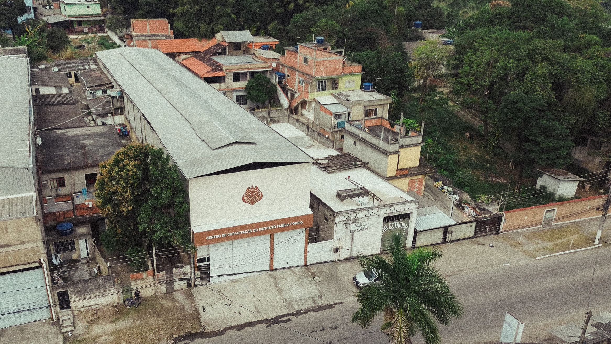

Centro Médico
Atendimento de saúde e odontológico para a comunidade, com acolhimento e dignidade.
ClínicaOdontologiaTriagemCuidamos de famílias e crianças de Duque de Caxias em quatro frentes — saúde, capacitação, esporte e recreação. Acolhimento que transforma, com a fé em lugar de honra.
Cada unidade é uma frente de atendimento ao público — e tem o leão vestindo a sua causa. Conheça o cuidado que oferecemos em cada uma.
Atendimento de saúde e odontológico para a comunidade, com acolhimento e dignidade.
ClínicaOdontologiaTriagem
Cursos e capacitação profissional que abrem portas e geram autonomia para o futuro.
CursosProfissionalizanteCertificação
Esporte e disciplina que formam caráter — incluindo turmas de Jiu-Jitsu para crianças e jovens.
Jiu-JitsuDisciplinaTurmas
Recreação e cuidado infantil em um espaço seguro, alegre e cheio de afeto.
RecreaçãoEspaço seguroCriançasEstamos onde o cuidado mais importa — de portas abertas para as famílias do nosso bairro, todos os dias.
Centro Médico · Instituto Família PôncioNascemos de uma experiência espiritual e do desejo de cuidar da comunidade, com atenção especial às crianças. De base cristã, caminhamos lado a lado com a transformação social.

Mudar realidades através de abrigo, amor, saúde, educação e capacitação profissional.
Ser referência em todas as esferas de atendimento ao próximo.
Familiares e direcionados pelos princípios da palavra de Deus.
Saúde, educação, esporte e recreação — pessoas reais, histórias reais, todos os dias em Duque de Caxias.




Um projeto totalmente nosso, tocado pela própria Família Pôncio para a comunidade de Duque de Caxias. Não dependemos de ninguém — caminhamos com fé, trabalho e gente boa do nosso lado. Você também pode fazer parte: com tempo, talento e presença.
Doe seu tempo e talento nas nossas unidades. Toda mão que ajuda transforma uma história.
Leve nossa história adiante nas redes e ajude mais famílias a encontrar o Instituto.
Conhece quem precisa de acolhimento? Conecte essa família ao cuidado do Instituto.
Fale com a Família Pôncio e descubra como você pode fazer parte desse cuidado, do jeitinho que combina com você.